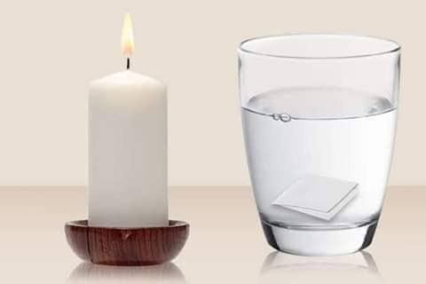
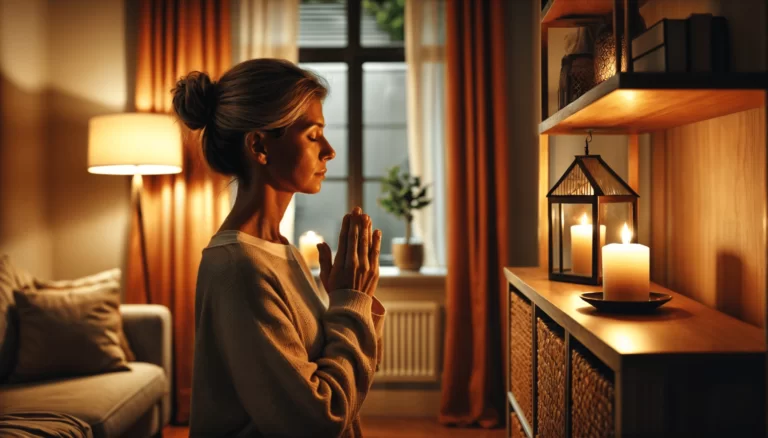

A Firmeza do Anjo da Guarda é um ato de conexão profunda com a energia divina que nos guia e protege. Este ritual é realizado acendendo uma vela de 7 dias branca, acompanhada de um copo com água, ambos colocados em um local acima da nossa cabeça, simbolizando a elevação do nosso Ori e a abertura para a luz espiritual. Através da firmeza, criamos um ponto de luz que serve como um canal direto de comunicação com o Anjo da Guarda, fortalecendo nossa relação com essa força divina.
Significado da água
Na firmeza de Anjo da Guarda, a água tem um papel simbólico e energético muito importante. Ela representa pureza, receptividade e canalização espiritual.
- Elemento de conexão: A água funciona como um condutor entre o plano físico e o espiritual, ajudando a estabelecer uma ponte com o Anjo da Guarda.
- Purificação: Ela absorve energias densas e ajuda a manter o ambiente limpo espiritualmente.
- Receptividade: Simboliza a abertura para receber mensagens, proteção e intuições do Anjo da Guarda.
- Canal de luz: Quando colocada ao lado da vela branca (que representa a luz divina), a água reforça o ponto de firmeza como um canal direto de comunicação com essa força espiritual.
Oração
Após acendê-la e colocarmos a água no copo, devemos fazer uma oração vinda do nosso coração. Primeiramente devemos agradecer por toda a proteção recebida, pela nossa saúde, pela nossa família, pela nossa fé, pelo nosso trabalho, por mais um dia vivido com as bênçãos do Divino Criador.
Anjo da guarda
Senhor anjo da minha guarda,
Semenlhança do Senhor, foi ti dado
A este mundo, minha alma defensor,
Senhor anjo da minha alma, ti guardo e em ti confio,
Por divina graça e poder,
Que das unhas dos inimigos vós me possa me defender,
Hoje por está noite, amanhã por todo o dia,
Senhor anjo da minha guarda reza a minha companhia.
Que assim seja.
Anjo da guarda
Santo anjo do Senhor,
Meu zeloso guardador , se a ti me confio a piedade divina,
confie-me,
guarda-me.
Que assimm seja.